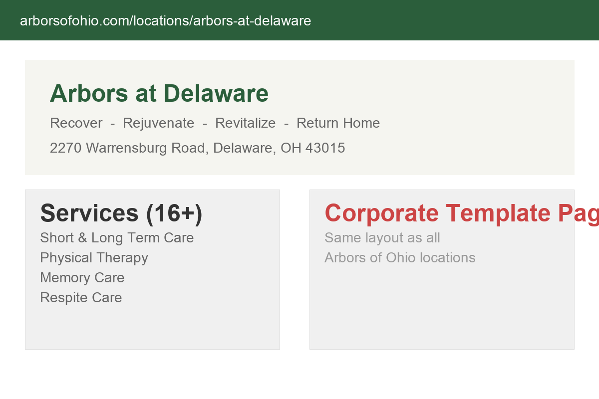

Arbors at Delaware is a skilled nursing and rehabilitation facility at 2270 Warrensburg Road in Delaware, Ohio. Part of the Arbors of Ohio network (operated by MediLodge/Prestige Healthcare), the facility provides a comprehensive continuum of care including short-term rehabilitation, long-term skilled nursing, memory care, respite care, physical therapy, occupational therapy, respiratory therapy, wound care, palliative care, outpatient therapy, and veteran's services. The tagline says it all: Recover. Rejuvenate. Revitalize. Return home.
The facility's service breadth is impressive. Sixteen distinct service categories ranging from infusion therapies and renal disease services to post-operative care and digestive disease support demonstrate a facility equipped for complex medical needs, not just basic custodial care. The 900-square-foot rehabilitation and therapy center, on-site medical director, podiatrist, dentist, and salon/spa services paint a picture of comprehensive, resident-centered care.
The location in Delaware County, Ohio's fastest-growing county, positions Arbors at Delaware in one of the state's most dynamic senior care markets. With the county adding roughly 12 new residents daily and the median age of the population shifting upward, demand for quality skilled nursing and rehabilitation services will only increase.
Arbors at Delaware also has a welcome video on YouTube, is actively hiring (with open positions posted through UKG), and promotes a team culture focused on caring for older adults. These are signs of an active, operational facility investing in its future.
Delaware County is in the midst of a demographic transformation. The rapid population growth includes not just young families but also aging adults who are staying in or moving to the area to be near family. Major healthcare systems including OhioHealth and Mount Carmel have expanded their presence in Delaware County, signaling confidence in the market's growth trajectory.
For Arbors at Delaware, this growth means increasing demand for rehabilitation services (post-surgical recovery, stroke rehab, injury recovery), memory care (as the Baby Boomer generation ages), and skilled nursing. The facility's comprehensive service offering positions it well to capture this demand, but the digital presence needs to match the opportunity.
The 2.3-star average on Caring.com (from 9 reviews) is a challenge but also an opportunity. Senior care reviews tend to come disproportionately from negative experiences because families in crisis are more likely to leave feedback. A proactive review strategy that encourages satisfied families to share their experiences can shift this average significantly. Every positive review from a family whose loved one recovered well at Arbors at Delaware is a powerful trust signal for the next family making this difficult decision.

Captured March 29, 2026
Arbors at Delaware's web presence lives on the Arbors of Ohio corporate website (arborsofohio.com/locations/arbors-at-delaware). This is a location-specific page within a multi-facility corporate site. While functional, it presents several challenges specific to the Delaware facility:
The 2.3-star rating on Caring.com from 9 reviews is the most visible third-party rating for the facility. In senior care, families research extensively before visiting, and review sites are a primary research tool. Some review excerpts point to concerns about room conditions, staffing, and maintenance. Whether these reviews reflect current conditions or outdated experiences, they are what families see when researching Arbors at Delaware. A proactive reputation management strategy is essential.
Delaware County has a strong and growing senior care market. Families have choices, and they research extensively before selecting a facility. Here is the competitive landscape:
Ohio Living Sarah Moore is a major competitor in Delaware's senior care market. Part of the Ohio Living network, Sarah Moore offers independent living, assisted living, skilled nursing, and rehabilitation. Their website features individual location pages with staff leadership profiles, testimonials from residents and families, virtual tours, photo galleries, activity calendars, and blog content about senior health topics. They actively manage their online reputation and respond to reviews. Ohio Living Sarah Moore represents the gold standard for senior care digital presence in Delaware County.
Willow Brook in Delaware offers a faith-based approach to senior living with independent living, assisted living, and skilled nursing. Their website includes resident stories, staff features, event calendars, and a strong content marketing program. The faith-based positioning differentiates them in the market and attracts families who value that approach. Their digital presence is polished and regularly updated.
The competitors are not just providing care. They are telling stories, showing faces, and building trust online before a family ever walks through the door. When a family searches "skilled nursing Delaware Ohio" and compares a corporate template page with a custom site featuring staff profiles, resident testimonials, and virtual tours, the choice is influenced before the first phone call.
The good news: Arbors at Delaware has competitive advantages that are not being communicated digitally. The 900-square-foot rehab center, on-site medical director, on-site dentist, on-site podiatrist, and salon/spa services are genuine differentiators. They just need a digital platform that showcases them properly.
Senior care searches are among the most emotionally charged and research-intensive searches on the internet. Families spend weeks or months researching before making a decision:
Unlike most purchase decisions, senior care involves a multi-week research process with multiple stakeholders (adult children, spouses, social workers, discharge planners). Here is the typical journey:
Families searching for senior care have questions that content marketing can answer. Blog posts and resource pages on topics like "What to expect during short-term rehabilitation," "How to choose a memory care facility," and "VA benefits for nursing home care" attract families during the research phase and position Arbors at Delaware as a knowledgeable, trustworthy resource.
Senior care marketing is evolving rapidly. Here is what matters for the next 2-3 years:
Search engines and care platforms are increasingly using AI to match families with appropriate facilities based on specific needs, location, services, and ratings. Facilities with rich, structured data (services, specialties, amenities, staff qualifications) will be recommended by AI assistants. Those with thin corporate template pages will be overlooked. When a family asks ChatGPT or Google AI "What skilled nursing facility in Delaware, Ohio offers physical therapy and memory care?", the answer comes from structured website data.
Post-pandemic, virtual tours have become expected in senior care. Families who live out of state, have mobility limitations, or want to pre-screen before visiting in person rely on virtual tours. A 360-degree virtual tour of the rehab center, resident rooms, dining areas, and outdoor spaces significantly increases tour bookings. The existing YouTube welcome video is a start, but a comprehensive virtual tour would be a major competitive advantage.
Google and Caring.com reviews are increasingly the first thing families see. More importantly, review response matters as much as the review itself. Facilities that respond thoughtfully to every review (positive and negative) demonstrate accountability and care. A study by BrightLocal found that 88% of consumers trust businesses that respond to reviews more than those that do not.
Healthcare schema markup tells search engines exactly what services a facility offers, what insurance is accepted, what amenities are available, and how to contact the facility. This structured data powers rich search results, AI recommendations, and voice search answers. Most senior care facilities in the Delaware area do not implement healthcare schema, creating an early-mover advantage for those that do.
Arbors at Delaware needs a dedicated digital presence that differentiates it from the corporate template and builds the trust families need to schedule a tour. Here is the plan:
Build a set of optimized landing pages for Arbors at Delaware's key services: skilled nursing, short-term rehabilitation, memory care, respite care, and VA services. Each page includes specific information about how the Delaware facility delivers that service, staff qualifications, and family testimonials. These pages rank independently for local searches like "memory care Delaware Ohio" and "short-term rehab Delaware County."
Implement a systematic review collection program targeting families of residents who have had positive experiences, especially short-term rehab patients who recovered and returned home. These success stories are powerful review content. Address existing negative reviews with thoughtful, professional responses. Target: 15+ new Google reviews in the first 90 days.
Create a comprehensive virtual tour showing the 900-sq-ft rehab center, resident rooms, dining areas, common spaces, salon/spa, and outdoor areas. Professional photography that shows the facility at its best. This content serves both the website and Google Business Profile, where photos significantly increase engagement.
Fully optimize the GBP with professional photos, all 16 services listed, current hours, virtual tour link, and the new landing pages. Weekly Google Posts highlighting activities, staff spotlights, and community events. This puts Arbors at Delaware in the local pack for every "nursing home near me" and "rehabilitation center Delaware" search.
Create a resource library with articles and guides: "What to Expect During Short-Term Rehabilitation," "Understanding Memory Care Options," "VA Benefits for Nursing Home Care," and "How to Choose a Skilled Nursing Facility in Delaware County." These pages attract families during the research phase and position Arbors as a trusted resource, not just a facility.
Senior care digital marketing requires sensitivity, accuracy, and an understanding of the emotional journey families are on. Here is how we would approach it:
Total time commitment: under 4 hours for the initial build.
A website is the foundation. Here is the full digital ecosystem for Arbors at Delaware:
Systematic review collection targeting families of successful rehab patients and long-term residents. Professional responses to every review, positive or negative. Goal: shift Caring.com rating from 2.3 to 3.5+ within 6 months.
360-degree virtual tour of the facility showing the rehab center, resident rooms, dining areas, common spaces, and outdoor areas. Embeddable on the website, Google Business Profile, and shareable to families researching from out of state.
Fully optimized GBP with all 16 services, professional photos, virtual tour, and weekly Google Posts. This is the single most important listing for "nursing home near me" and "rehab center Delaware" searches.
Educational guides and articles that help families navigate senior care decisions: choosing a facility, understanding Medicare/Medicaid, VA benefits, memory care options. Positions Arbors as a trusted advisor during the research phase.
Monthly staff profiles featuring nurses, therapists, activity coordinators, and support team members. Families want to see the faces of people who will care for their loved ones. Authentic profiles build trust and humanize the facility.
Digital communication system for hospital discharge planners, social workers, and physicians who refer patients to skilled nursing facilities. Includes a referral portal, digital brochure, and automated updates on bed availability and services.
In skilled nursing and rehabilitation, census is everything. Each occupied bed represents significant daily revenue. Here is how digital investment translates to census growth:
Aspire Digital builds digital presence for locally operated businesses in growing markets. Arbors at Delaware sits in one of Ohio's fastest-growing counties, offers comprehensive care services with on-site specialists, and has a 900-square-foot rehabilitation center that is a genuine competitive advantage. That story deserves to be told effectively online.
We understand that senior care marketing is different from other industries. The decision-maker is often an adult child who is scared, overwhelmed, and making one of the most important decisions of their life. The digital presence needs to be warm, informative, and trustworthy. It needs to show faces, share stories, and answer questions before they are asked. It needs to make a family feel confident that their loved one will be cared for with dignity.
What impressed us about Arbors at Delaware is the breadth of services: 16 specialized care categories, an on-site medical director, on-site dentist, on-site podiatrist, and salon/spa services. That level of comprehensive care is not common in every skilled nursing facility. It deserves a digital presence that communicates that comprehensiveness and positions the Delaware location as a leader in the market.
No pressure. Just a conversation about building a digital presence that matches the quality of care happening inside your walls.
Book a Free Strategy Callor email Chris directly